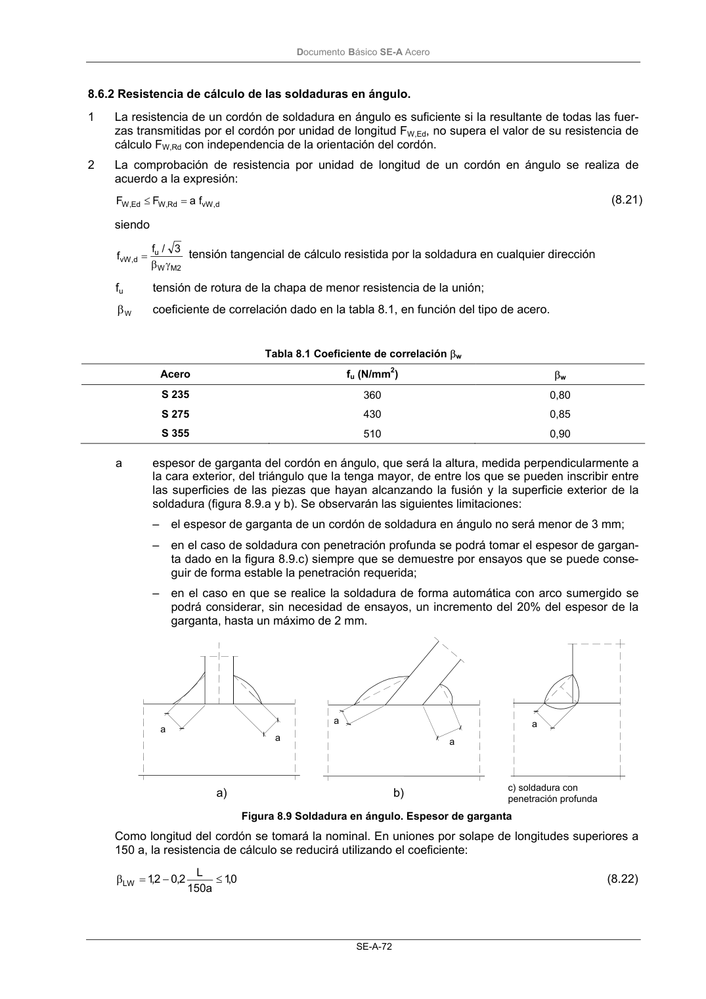

DB-SE-A · 8.6.2 Resistencia de cálculo de las soldaduras en ángulo. · versión 2007-10-23
SHA256: 9ed9ea694aabfbda3bfbbef40dfe9223fde05d13c35bc2ba9751e5a96a22a64f · página física 74 de 168 · métodos de encabezado
solo si están cotejados.
Formatos: Markdown · JSON de bloques · PDF p. 74 · imagen PNG
Documento Básico SE-A Acero SE-A-72 8.6.2 Resistencia de cálculo de las soldaduras en ángulo. 1 La resistencia de un cordón de soldadura en ángulo es suficiente si la resultante de todas las fuer- zas transmitidas por el cordón por unidad de longitud FW,Ed, no supera el valor de su resistencia de cálculo FW,Rd con independencia de la orientación del cordón. 2 La comprobación de resistencia por unidad de longitud de un cordón en ángulo se realiza de acuerdo a la expresión: d , vW Rd , W Ed , W f a F F = ≤ (8.21) siendo 2 M W u d , vW 3 / f f γ β = tensión tangencial de cálculo resistida por la soldadura en cualquier dirección fu tensión de rotura de la chapa de menor resistencia de la unión; W β coeficiente de correlación dado en la tabla 8.1, en función del tipo de acero. Tabla 8.1 Coeficiente de correlación βw Acero fu (N/mm2) βw S 235 360 0,80 S 275 430 0,85 S 355 510 0,90 a espesor de garganta del cordón en ángulo, que será la altura, medida perpendicularmente a la cara exterior, del triángulo que la tenga mayor, de entre los que se pueden inscribir entre las superficies de las piezas que hayan alcanzando la fusión y la superficie exterior de la soldadura (figura 8.9.a y b). Se observarán las siguientes limitaciones: – el espesor de garganta de un cordón de soldadura en ángulo no será menor de 3 mm; – en el caso de soldadura con penetración profunda se podrá tomar el espesor de gargan- ta dado en la figura 8.9.c) siempre que se demuestre por ensayos que se puede conse- guir de forma estable la penetración requerida; – en el caso en que se realice la soldadura de forma automática con arco sumergido se podrá considerar, sin necesidad de ensayos, un incremento del 20% del espesor de la garganta, hasta un máximo de 2 mm. Figura 8.9 Soldadura en ángulo. Espesor de garganta Como longitud del cordón se tomará la nominal. En uniones por solape de longitudes superiores a 150 a, la resistencia de cálculo se reducirá utilizando el coeficiente: 0,1 a 150 L 2,0 2,1 LW ≤ − = β (8.22) a a a a a a) b) c) soldadura con penetración profunda
